e-Touch
Borrador inicial para revision visual
Este borrador usa exclusivamente assets review-draft del reset visual 2026-05-13 para revisar una version integral del manual sin arrastrar la generacion anterior.
1. Introduccion
e-Touch se documenta aqui como una cerradura con numerales integrados en la manija, sin inventar un panel plano frontal que el producto no tiene.
2. Capacidades clave
- Conectividad: Bluetooth con la app Tuya.
- Modos de apertura: huella dactilar, contrasena y llave mecanica.
- Gestion remota: administracion de miembros, huellas y contrasenas desde la app.
- Accesos temporales: contrasenas de un solo uso o por tiempo limitado.
- Comodidad: modo normalmente abierto configurable.
- Energia: 4 baterias AAA con respaldo por micro-USB.
3. Vista general y primeros pasos
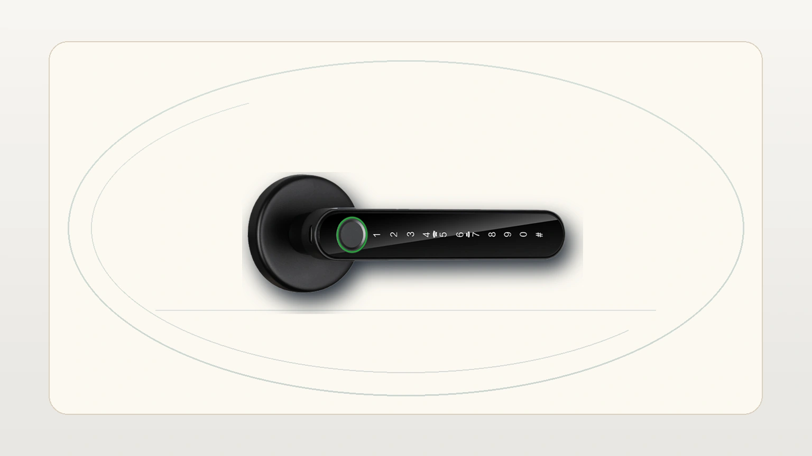
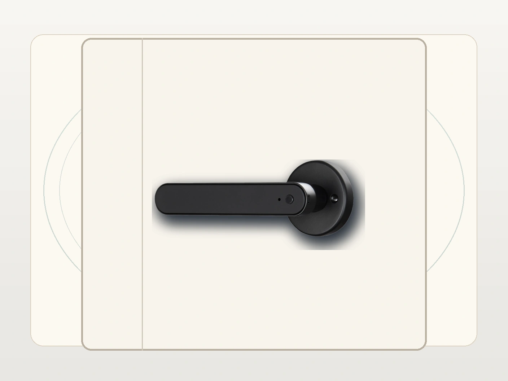
Antes de iniciar:
- verifica que la manija y las rosetas circulares queden bien alineadas
- instala las baterias AAA
- despierta la zona numerica integrada
- define el administrador principal y la app que quedara vinculada
4. Alta de administrador
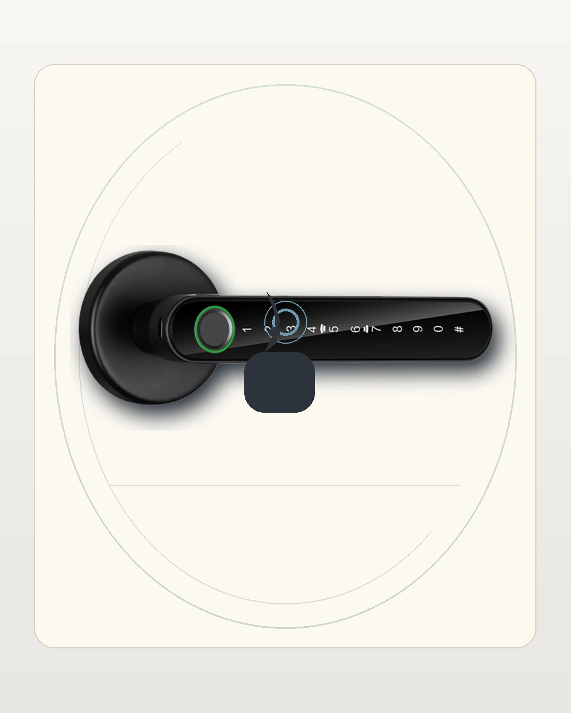
Flujo sugerido:
- activa la zona numerica integrada en la manija
- entra al flujo de administracion correspondiente
- registra el acceso del administrador
- valida el gesto de toque y la respuesta del equipo
5. Uso de PIN integrado
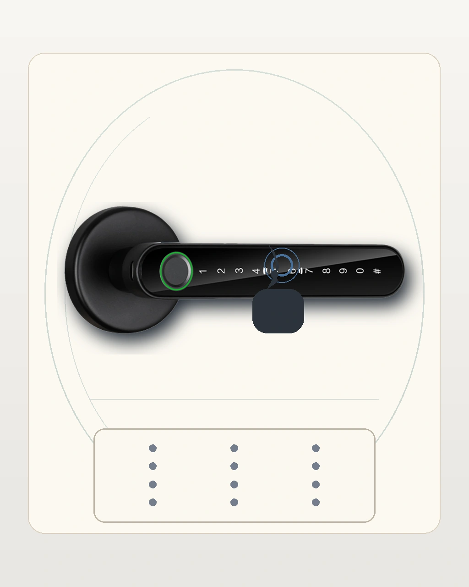
Puntos que deben quedar claros en web:
- los numerales viven en la manija, no en un panel aparte
- el usuario debe pulsar sobre la zona numerica integrada
- la clave debe validarse apenas termina el registro
6. Huella y miembros desde la app
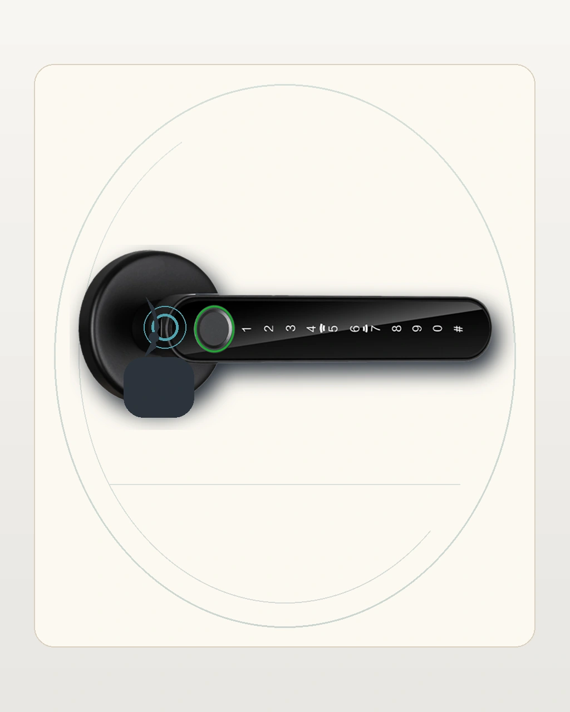
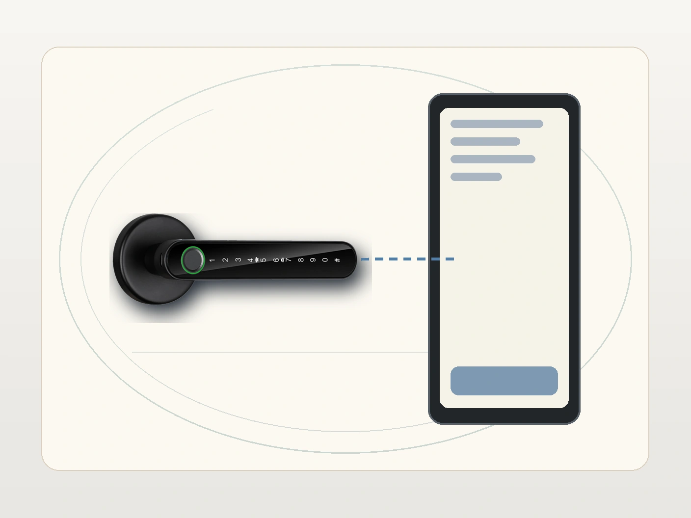
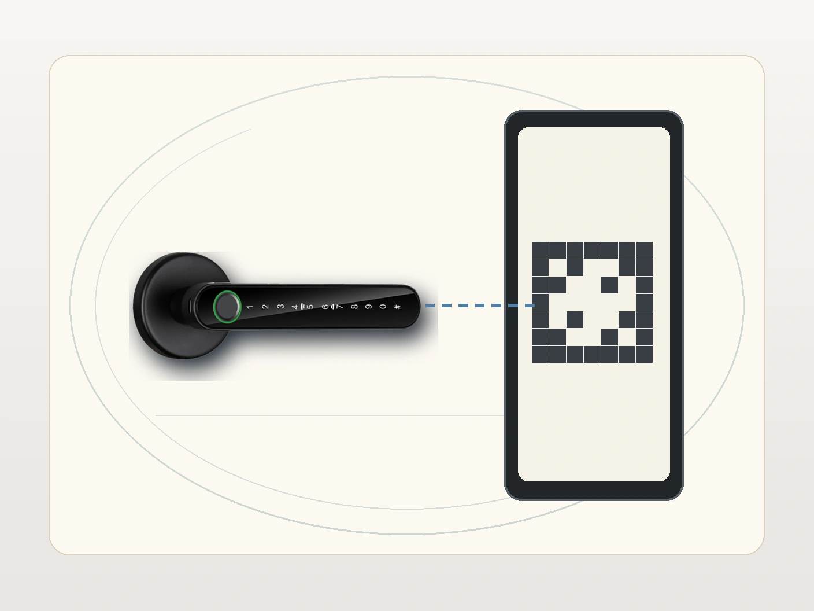
Usa este bloque para explicar:
- registro de huellas
- gestion de miembros
- contrasenas temporales o de un solo uso
- validacion de accesos desde la app Tuya
7. Ajustes e idioma en flujos condicionales
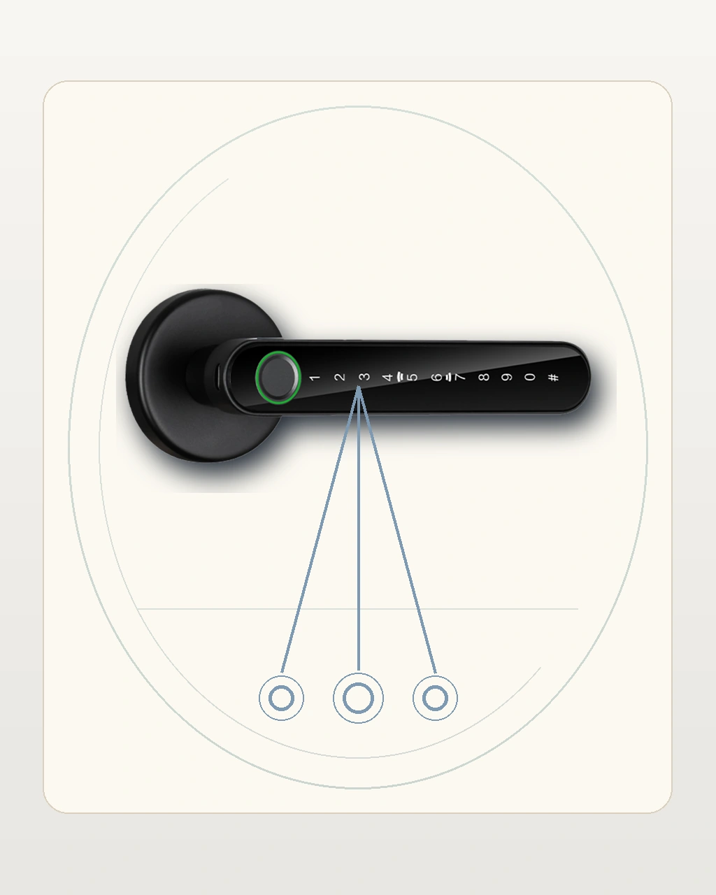
Este asset es esquematico y debe usarse para flujos condicionales o de configuracion cuando la version real lo justifica. No se debe presentar como si existiera una pantalla frontal fija en el equipo.
8. Soporte, energia de emergencia y diagnostico
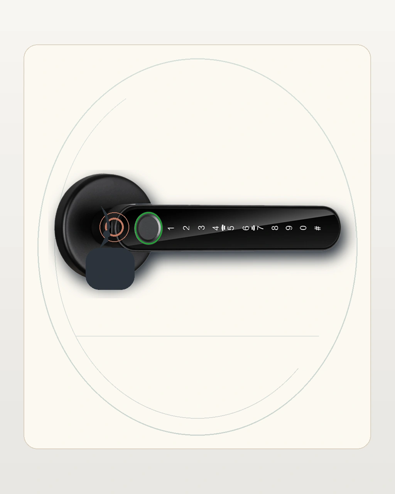
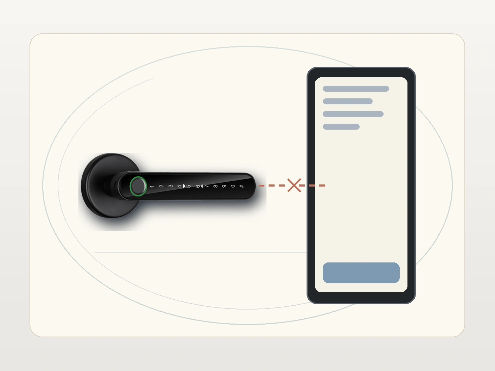
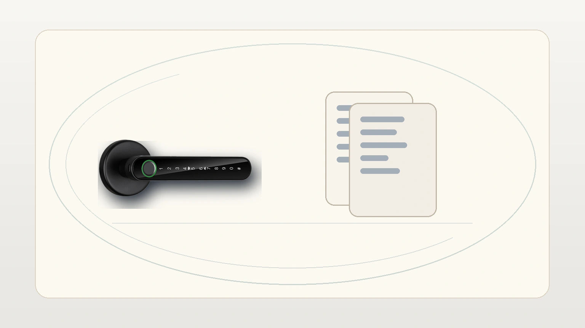
La version web debe recordar:
- respaldo por micro-USB en caso de bateria baja
- modo normalmente abierto cuando aplique
- validacion del sensor de huella en la base de la manija
- disponibilidad de descargas y soporte postventa
9. Estado del borrador
Este archivo es una version integral de revision. Los assets review-draft fueron reconstruidos bajo el reset visual 2026-05-13 y quedan listos para inspeccion antes de publicar el paquete final.